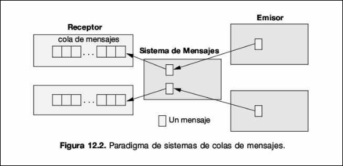
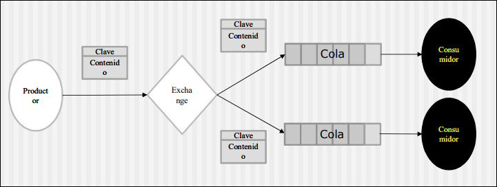
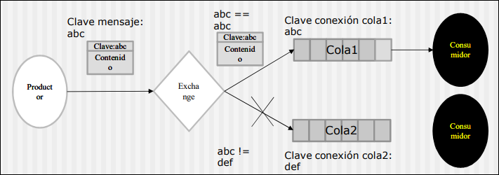
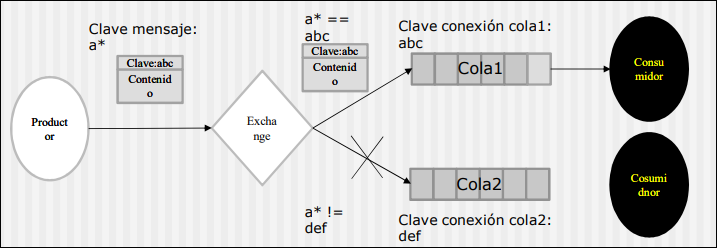
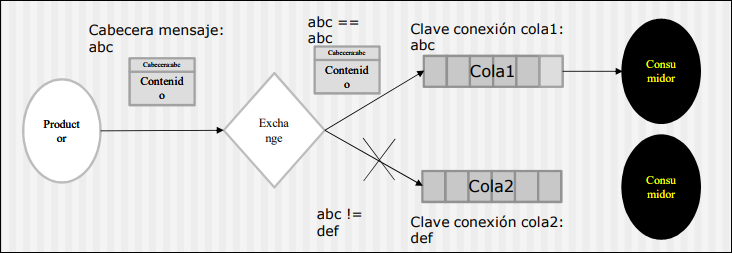
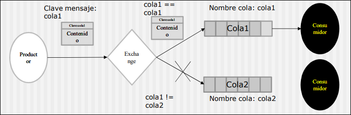

COMDIS · curso 3
7. Sistemas de Mensajes · COMDIS
7.1 Introducción y Contexto Histórico
Para comprender la importancia de RabbitMQ, primero debemos entender el problema que resuelve: la interconectividad en sistemas heterogéneos.
7.1.1 La era de los Mainframes y la Conexión Punto a Punto
- Años 60: La computación estaba dominada por Mainframes para operaciones críticas. Las opciones de entrada eran reducidas y la interconectividad entre sistemas era prácticamente inexistente. El procesamiento paralelo tal como lo conocemos hoy no era posible.
- Años 70: Se introduce el acceso mediante terminales y el acceso concurrente, permitiendo cierta comunicación entre mainframes a través de redes primitivas.
- Años 80: La llegada del PC y las interfaces gráficas incrementó la necesidad de acceder a los datos centralizados en los mainframes.
Info
Un Mainframe es una computadora de alto rendimiento, gran tamaño y centralizada, diseñada para procesar inmensos volúmenes de datos y transacciones críticas (banca, censos, aerolíneas).
El problema de la escalabilidad ("Spaghetti Integration"): Conectar fuentes y destinos no era sencillo. Cada par de sistemas requería adaptadores específicos para hardware, protocolos y formatos de datos.
- A mayor número de sistemas, mayor número de adaptadores y versiones.
- Esto resultaba en una arquitectura no escalable y extremadamente difícil de mantener.
7.1.2 La Solución: Mensajería Empresarial
Como respuesta a este caos de conexiones directas, surge la mensajería empresarial.
- Objetivo: Transferir información entre sistemas heterogéneos mediante el envío de mensajes, eliminando el acoplamiento directo.
- Evolución tecnológica: Se pasó de las Llamadas a Procedimientos Remotos (RPC) (que actúan como middleware tipo COM o CORBA) a los Sistemas MOM (Message-Oriented Middleware).
7.2 Fundamentos de los Sistemas de Mensajes (MOM)
Un sistema de mensajes es un método de comunicación entre componentes de software o aplicaciones que abstrae la complejidad de la red.
Características Clave: La principal ventaja de usar MOM (como RabbitMQ) frente a una conexión directa (como HTTP REST síncrono) reside e el desacoplamiento:
- Desacomplamiento Temporal (Asincronía): Emisor y receptor no necesitan estar disponibles al mismo tiempo. El emisor envía el mensaje y sigue trabajando; el receptor lo procesará cuando pueda.
- Desacomplamiento Estructural (Weak Coupling): Emisor y receptor no necesitan saber nada el uno del otro (ni IP, ni tipo de servidor). Solo necesitan conocer el formato del mensaje y el destino lógico.
- Conexión Única: Solo es necesaria la conexión al MOM, no una conexión mallada entre todos los servicios.

7.3 RabbitMQ: Arquitectura y Protocolos AMQP
RabbitMQ es un middleware de mensajería (Message Broker) concebido en 2007. Aunque soporta múltiples protocolos (STOMP, HTTP), su estándar nativo y más potente es AMQP 0-9-1.
7.3.1 ¿Qué es AMQP?
El Advanced Message Queuing Protocol es un protocolo asíncrono que garantiza el envío fiable de mensajes. Su función es almacenar mensajes en colas seguras hasta que el receptor se conecte o cumpla los criterios para recibirlo.
7.3.2 Componentes de la Arquitectura AMQP
En un sistema RabbitMQ, la comunicación no es directa de "A" a "B". Fluye a través de componentes específicos:
- Mensajes: La unidad de datos. Contiene dos partes:
- Contenido (Payload): los datos en sí (array de bytes)
- Clave (Routing Key): un valor que permite al sistema saber a qué cola debe dirigirse el mensaje.
- Productor (Producer): El software que crea y envía el mensaje. Nota: En términos de código, "producir" significa "enviar".
- Intercambiador (Exchange): Este es el componente crítico. Es el "cartero" o router. Recibe los mensajes del productor y decide a qué cola enviarlos basándose en reglas (bindigns) y en la clave del mensaje.
- Cola (Queue): Un buffer o buzón que vive dentro de RabbitMQ. Almacena los mensajes de forma segura hasta su consumo.
- Consumidor (Consumer): El software que esperar recibir y procesar los mensajes desde la cola
Importante: El productor nunca envía mensajes directamente a la cola. Siempre los envía al Exchange.
7.4 Tipos de Exchange (Estrategias de Enrutamiento)
El comportamiento del sistema depende totalmente del tipo de Exchange que configuremos. Tenemos 5 estrategias fundamentales.
7.4.1 Fanout (Difusión)
- Lógica: El mensaje se envía a todas las colas conectadas al exchange, ignorando la clave del mensaje.
- Uso: Ideal para patrones "Publish/Subscribe" donde varios sistemas deben reaccionar al mismo evento.
- Diagrama conceptual: Un mensaje entra y se clona hacia la Cola 1 y la Cola 2 simultáneamente.

7.4.2 Direct (Directo)
- Lógica: El mensaje va a una cola específica si la Clave del Mensaje (Routing Key) coincide exactamente con la Clave de Conexión (Binding Key) de la cola.
- Ejemplo: Si el mensaje tiene clave
abcy la Cola 1 está atada conabc, el mensaje entra. Si la Cola 2 esperadef, el mensajeabcse descarta para esa cola.

7.4.3 Topic (Tema)
- Lógica: Similar al Directo, pero permite coincidencias parciales usando comodines (wildcards).
- Ejemplo: Un mensaje con clave
a.b.cpodría entrar en una cola que escuchea.*o*.b.*. - Diagrama conceptual: Permite enrutamiento complejo basado en patrones.

7.4.4 Header (Cabecera)
- Lógica: Ignora la clave de enrutamiento. En su lugar, inspecciona los metadatos (headers) del mensaje para decidir el destino.

7.4.5 Default (Nameless)
- Lógica: Es un Exchange predeterminado. Compara la clave del mensaje directamente con el nombre de la cola. Si el mensaje tiene clave
cola1, se entrega a la cola llamadacola1. - Nota: Es el comportamiento por defecto si no se especifica exchange.

7.5 Programación con RabbitMQ
7.5.1 Conceptos Fundamentales de Arquitectura
- Productor (Producer): Es el programa que envía los mensajes.
- Consumidor (Consumer): Es el programa que espera y recibe los mensajes.
- Cola (Queue): Un gran "buffer" o buzón que vive dentro de RabbitMQ donde se almacenan los mensajes.
La tubería: Conexión vs Canal Esta distinción es crítica para entender el código:
- Conexión (
Connection): Es la conexión TCP/IP real entre tu aplicación y el broker RabbitMQ. Es pesada y costosa de establecer (autenticación, handshake). - Canal (
Channel): Es una conexión virtual dentro de la conexión TCP. La mayoría de las tareas de la API (enviar, recibir, declarar colas) se realizan a través del canal.
Analogía: La Conexión es la autopista (cable) que llega al servidor. Los Canales son los carriles individuales por donde viajan los coches (mensajes). Se usa una sola conexión y múltiples canales para ser eficientes.
7.5.2 Desarrollo del Productor
El objetivo del productor es conectarse y dejar un mensaje en una cola.
Paso 1: Configurar la Conexión
Usamos una ConnectionFactory para definir los parámetros del productor.
ConnectionFactory factory = new ConnectionFactory();
factory.setHost("localhost"); // Apunta al servidor local
// Si el servidor es remoto, usarías factory.setHost("192.168.1.50");
Paso 2: Crear Conexión y Canal (Try-with-resources)
Se recomienda usar la estructura try (...) de Java para que la conexión y el canal se cierren automáticamente al terminar, liberando recursos.
try (Connection connection = factory.newConnection();
Channel channel = connection.createChannel()) {
Paso 3: Declarar la Cola (Idempotencia) Antes de enviar nada, debemos asegurarnos de que el destino existe.
channel.queueDeclare(QUEUE_NAME, false, false, false, null);
// queueDeclare(queue, durable, exclusive, autoDelete, arguments)
// 1. queue (String): El nombre de la cola (ej: "mi_cola").
// 2. durable (boolean): false = Si RabbitMQ se reinicia, la cola (y sus mensajes) DESAPARECEN.
// true = La cola se guarda en disco y sobrevive al reinicio.
// 3. exclusive (boolean): false = Otros conexiones/canales pueden acceder a esta cola.
// true = Solo ESTA conexión puede usarla (útil para colas temporales privadas).
// 4. autoDelete (boolean): false = La cola se queda ahí aunque no haya nadie escuchando.
// true = La cola se borra sola cuando el último consumidor se desconecta.
// 5. arguments (Map): null = Sin configuración extra (se usa para TTL, longitud máxima, etc.).
Concepto Clave (Idempotencia): Esta operación es idempotente. Significa que si la cola ya existe, no hace nada; si no existe, la crea. Esto evita errores si ejecutas el programa múltiples veces.
Paso 4: Publicar el Mensaje Finalmente, enviamos el mensaje convertido a bytes
String message = "Hello World!";
channel.basicPublish("", QUEUE_NAME, null, message.getBytes());
//basicPublish(exchange, routingKey, metadatos, body)
- El primer parámetro
""indica que usamos el Exchange por Defecto. - El segundo parámetro usa el nombre de la cola como Routing Key (clave de enrutamiento).
7.5.3 Desarrollo del Consumidor (Recv.java)
El consumidor se mantiene a la escucha (listening) para procesar mensajes entrantes.
Paso 1: Configuración Simétrica Al igual que el Productor, el Consumidor debe abrir conexión, canal y declarar la cola.
channel.queueDeclare(QUEUE_NAME, false, false, false, null);
¿Por qué repetirlo? Porque en sistemas distribuidos no sabemos quién arranca primero. Si iniciamos el Consumidor antes que el Productor y la cola no existe, el programa fallaría. Declararla en ambos lados garantiza que el "buzón" exista siempre.
Paso 2: Callback de Entrega (Asincronía)
El servidor envía mensajes de forma asíncrona (push) al cliente. No usamos un bucle while tradicional, sino un Callback (una función que se dispara al ocurrir un evento).
Definimos el objeto DeliverCallback que almacenará la lógica de "qué hacer cuando llegue un mensaje":
DeliverCallback deliverCallback = (consumerTag, delivery) -> {
String message = new String(delivery.getBody(), "UTF-8");
System.out.println("Recibido: " + message);
};
Paso 3: Iniciar el Consumo Le indicamos al canal que empiece a consumir mensajes de la cola específica usando el callback definido.
channel.basicConsume(QUEUE_NAME, true, deliverCallback, consumerTag -> { });
// basicConsume(queue, autoAck, deliverCallback, cancelCallback)
// 1. queue (String): De qué cola quieres leer.
// 2. autoAck (boolean): true = "Modo disparo y olvido". RabbitMQ borra el mensaje en cuanto te lo envía,
// sin esperar a que le digas que lo procesaste bien. (Rápido pero arriesgado).
// false = Tienes que enviar un 'ack' manual después de procesar.
// 3. deliverCallback: La función (lambda) que se ejecuta CADA VEZ que llega un mensaje.
// 4. cancelCallback: La función que se ejecuta si el servidor cancela al consumidor (raro, por ejemplo si la cola se borra).
7.5.4 Estrategias de Enrutamiento (Exchanges)
El verdadero poder de RabbitMQ no es solo guardar mensajes, sino decidir a quién entregarlos. Esta decisión la toma el Exchange (Intercambiador). El Productor envía al Exchange, y el Exchange reparte a las Colas según el algoritmo elegido.
Default (Sin nombre)
- Funcionamiento: Es el comportamiento básico que vimos en el código anterior.
- Lógica: Compara la clave del mensaje directamente con el nombre de la cola.
- Código:
channel.basicPublish("", "nombre_cola", ...)
Fanout (Difusión)
Concepto: "El Megáfono". El productor grita, y todos los que estén conectados escuchan.. Caso de uso: Un marcador deportivo. Si hay gol, actualizas la Web, la App y la TV a la vez.
Productor: no le importa quién escucha. Envía al exchange "deportes".
// 1. Declaramos el exchange de tipo FANOUT
channel.exchangeDeclare("exchange_deportes", "fanout");
// 2. Publicamos.
// FÍJATE: RoutingKey está vacía ("") porque Fanout la ignora.
String mensaje = "GOL DEL EQUIPO LOCAL";
channel.basicPublish("exchange_deportes", "", null, mensaje.getBytes());
Consumidor: aquí cambia la cosa. El consumidor crea una cola temporal y la conecta al exchange.
channel.exchangeDeclare("exchange_deportes", "fanout");
// Creamos una cola aleatoria, exclusiva y temporal (se borra al desconectar)
String nombreCola = channel.queueDeclare().getQueue();
// BINDING: "Conecta mi cola temporal al exchange de deportes"
channel.queueBind(nombreCola, "exchange_deportes", "");
// Consumimos
channel.basicConsume(nombreCola, true, deliverCallback, consumerTag -> {});
Direct (Directo)
Concepto: "El Cartero Exacto". El mensaje lleva una etiqueta y solo entra en la cola que espera esa etiqueta exacta. Caso de uso: Sistema de Logs. Un consumidor guarda en disco solo los "errores", otro imprime en pantalla "info" y "errores".
Productor: Pone una etiqueta específica (routingKey) al mensaje.
// 1. Tipo DIRECT
channel.exchangeDeclare("exchange_logs", "direct");
// 2. Enviamos un error grave
String mensaje = "Fallo crítico en base de datos";
String severidad = "error"; // Esta es la Routing Key
channel.basicPublish("exchange_logs", severidad, null, mensaje.getBytes());
Consumidor: solo quiere recibir lo que venga con la etiqueta "error"
channel.exchangeDeclare("exchange_logs", "direct");
String nombreCola = channel.queueDeclare().getQueue();
// BINDING: "Solo envíame mensajes si la routing key es EXACTAMENTE 'error'"
channel.queueBind(nombreCola, "exchange_logs", "error");
channel.basicConsume(nombreCola, true, deliverCallback, consumerTag -> {});
Topic (Tema)
Concepto: "El Patrón Inteligente". Permite filtrar por partes usando comodines (* para una palabra, # para varias). Caso de uso: Noticias. Categorías como deportes.futbol.madrid o politica.internacional.usa.
Productor: Usa claves jerárquicas separadas por puntos.
channel.exchangeDeclare("exchange_noticias", "topic");
String mensaje = "El Madrid gana la liga";
// Clave: Categoría.Subcategoría.Equipo
channel.basicPublish("exchange_noticias", "deportes.futbol.madrid", null, mensaje.getBytes());
Consumidor A (Fanático del fútbol en general): Quiere todo lo que sea fútbol, no importa el equipo.
// BINDING: El asterisco (*) sustituye a UNA palabra (el equipo)
// Recibirá: deportes.futbol.madrid, deportes.futbol.barca
channel.queueBind(nombreCola, "exchange_noticias", "deportes.futbol.*");
Consumidor B (Periodista de Deportes): Quiere absolutamente todo lo que empiece por "deportes".
// BINDING: La almohadilla (#) sustituye a CUALQUIER cantidad de palabras
// Recibirá: deportes.futbol.madrid, deportes.tenis, deportes.waterpolo.femenino
channel.queueBind(nombreCola, "exchange_noticias", "deportes.#");
Header (Cabecera)
Concepto: "Enrutamiento por Metadatos". Ignora la routing key y mira las propiedades del mensaje. Es menos común en cursos introductorios pero muy potente. Caso de uso: Procesar archivos. Si el mensaje es XML va a un lado, si es JSON a otro.
Productor: Configura un mapa de propiedades.
channel.exchangeDeclare("exchange_archivos", "headers");
Map<String, Object> cabeceras = new HashMap<>();
cabeceras.put("formato", "pdf");
cabeceras.put("tipo", "informe");
AMQP.BasicProperties props = new AMQP.BasicProperties.Builder()
.headers(cabeceras)
.build();
channel.basicPublish("exchange_archivos", "", props, mensaje.getBytes());
Consumidor: Dice "Dame mensajes que tengan estas cabeceras".
Map<String, Object> bindingArgs = new HashMap<>();
bindingArgs.put("x-match", "all"); // Deben coincidir TODAS las reglas
bindingArgs.put("formato", "pdf");
channel.queueBind(nombreCola, "exchange_archivos", "", bindingArgs);